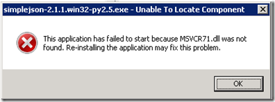

Installing Python Modules on Windows¶
- date:
2010-10-20 17:49
- author:
admin
- category:
python
- tags:
64bit, geojson, json, windows
- slug:
installing-python-modules-on-windows
- status:
published
 Installing Python modules on 32 bit Windows is a fairly simple process once you get to know the vocabulary of packages (Python scripts and libraries), eggs (similar to a bundled zip file), and the Cheeseshop (the Python “app store” equivalent ?” now renamed the Python Package Index or PyPi).
{kind=link}
Many popular packages in PyPi have custom Windows installers that take care of both Python files and any associated DLLs. For example Shapely and NumPy.
For other packages the easiest way to add them to your Python installation is to use Setup Tools. Download the Windows setup package corresponding to your version of Python from http://pypi.python.org/pypi/setuptools and double click to install.
This adds an easy_install.exe to your C:\Python\Scripts folder that can be used to quickly add packages. You run easy_install from the Windows command line followed by the name of the package. It searches the online PyPi for the best match for your Python version, and then downloads and installs it.
For example to install MapFish open a command window and run:
C:\Python27\Scripts\easy_install mapfish
Or for GeoJSON:
C:\Python27\Scripts\easy_install geojson
64-Bit Windows¶
If you install the 32-bit version of Python on Windows 64 bit then you can continue to install the standard 32-bit packages as above. However if you want to take advantage of a 64-bit version of Python then things get trickier.
If you are lucky an official 64-bit Windows installer is already available for download e.g. Shapely, unfortunately this is the exception rather than the rule. There are however often “unofficial” installers available on the web.
If you try to run a 32-bit installer then it will often say it cannot find your Python installation. This is because the 64-bit and 32-bit Python installations write to different parts of the Windows registry. You can try and fool the set up package into installing using the method outlined here, however if the package relies on DLLs then you could end up with problems. If the package is pure Python (no associated DLLs) then I don’t think this should be an issue.
If you receive a “This application has failed to start because MSVCR71.dll was not found” error then the Python package relies on DLLs written in C++. To use these packages you need to install the Microsoft Visual C++ Redistributable Package. This can be downloaded from here. It contains “runtime components of Visual C++ Libraries required to run 64-bit applications developed with Visual C++ SP1 on a computer that does not have Visual C++ 2008 SP1 installed.”
I recently came across a treasure trove for 64-bit Windows and Python maintained by Christoph Gohlke at http://www.lfd.uci.edu/~gohlke/pythonlibs/. This page contains 64-bit Windows installers for many packages including GDAL (there are further details on using 64 bit GDAL and MapScript here), and a compilation of many packages including geopy, simplejson, sphinx, pytools and many others.
- orphan:
Comments¶
Add Comment